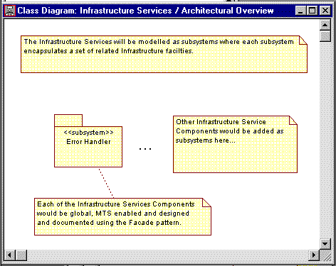

Standards:
Architectural Overview Diagram

Class Diagram |
A class diagram illustrating the architecture of a package. |
| Related Information: |
|
Topics
Background 
The architectural overview diagram is a class diagram describing the architecture of a
package:
- if the package is a <<layer>> the
architectural overview diagram will show how the layer is decomposed into other layers or
subsystems
- This diagram is mandatory for layers
- if the package is a <<model>> it will
show how the model itself is decomposed into layers or subsystems
- This diagram is mandatory for models
- other packages will only contain an architectural overview diagram if their internal
structure is considered to be significant architectural interest. For these packages
the architectural overview diagram is just part of their internal design.
- This diagram is optional for all other packages.
The focus of the architectural overview diagram is to document the architectural style
and rules to be applied when adding further constituent parts to the package. The
diagram should be created and owned by the architect and would be the diagram used in the
Software Architecture Description.
Unlike the package's Main diagram the architectural overview diagram will not be
updated whenever a new class or package is added. It will only change if the
architecture of the package changes.
Examples
The Architectural Overview diagram for the Infrastructure Services <<layer>>:

|